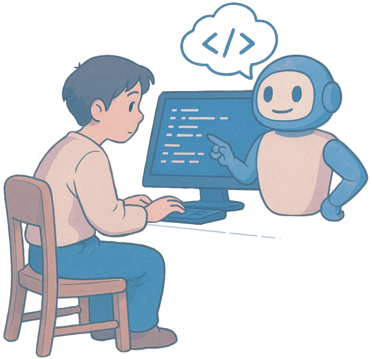

A classic NPC with a low social footprint. Paul would never join a club, nor would he volunteer. If you're moving house, he's wearing a neck brace.
Driven by a commitment to clarity, consistency, and adaptability, Paul brings a thoughtful and agile mindset to every project. He believes excellence comes from staying flexible, learning quickly, and embracing imperfection when it helps move things forward.
With a strong focus on emerging industry trends, Paul is particularly attuned to the growing emphasis on AI and hybrid cloud strategies. He recognizes the importance of integrating on-premises infrastructure with public cloud platforms to support modern AI workloads. This kind of convergence not only enables full cloud-native migration but also accelerates AI adoption across organizations.
As computing demands increase and cloud costs rise, Paul sees a shift toward investing in on-premises hardware like GPUs. He values secure, private environments for data processing and understands the importance of making smart infrastructure choices to balance performance, cost, and security.
Uniquely positioned to orchestrate AI tools across every stage of a digital project, Paul supports teams from initial concept through to final delivery—ensuring technology works seamlessly to bring ideas to life.
Current project: Developing AI-driven large language model (LLM) applications with domain-specific analysis tailored to game development, particularly focused on slot machine mechanics and advanced gambling algorithms. These models are designed to perform deep pattern recognition, probabilistic modeling, and behavioral analysis of game logic, payout structures, and player interaction data. The solution integrates with simulation environments and reinforcement learning frameworks to evaluate and optimize game dynamics, player engagement, and monetization strategies.
Loves: Yorkshire tea, sports mixtures, science fiction, crisp grid lines, schematics, rulebooks and schematics, AI.
Dislikes: Over ripe bananas, pips, purple, any noise of people eating
Favourite animal: Sloth